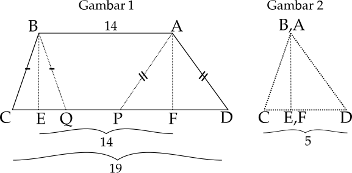
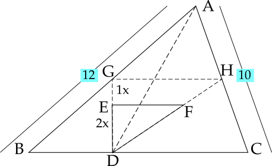
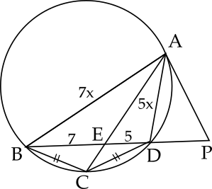
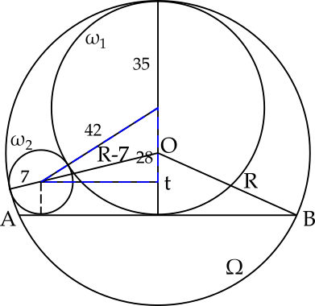
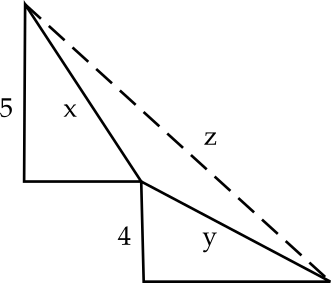
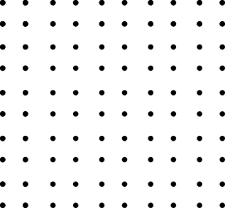
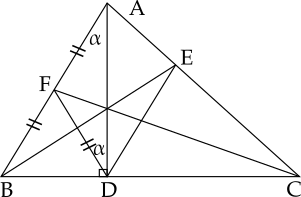

OSK Matematika SMA Tahun 2023 diadakan pada 4 April 2023 secara daring
Kemampuan Dasar
Hasil penjumlahan semua solusi persamaan $$\begin{array}{rl}|x-|2x+3||&=99\end{array}$$ adalah...
$$\boxed{62}$$
Kita akan bagi menjadi 2 kasus yaitu ketika $x-$ $|2x+3|$ $=99$ atau $x-$ $|2x+3|$ $=-99.$
Kasus 1:
$$\begin{array}{rll}x-|2x+3|&=99\\x-99&=|2x+3|&\text{(kuadratkan)}\\x^2-198x+99^2&=4x^2+12x+9\\-3x^2-210x+9792&=0&\text{(bagi }-3)\\x^2+70x-3264&=0&(\text{TIDAK ADA memenuhi } x-99\ge 0)\end{array}$$Kasus 2:
$$\begin{array}{rll}x-|2x+3|&=-99\\x+99&=|2x+3|&(\text{kuadratkan})\\x^2+198x+99^2&=4x^2+12x+9\\-3x^2+186x+9792&=0&(\text{bagi }-3)\\x^2-62x-3264&=0\\(x-96)(x+34)&=0&(\text{memenuhi }x+99\ge 0)\end{array}$$
Kasus 1:
$$\begin{array}{rll}x-|2x+3|&=99\\x-99&=|2x+3|&\text{(kuadratkan)}\\x^2-198x+99^2&=4x^2+12x+9\\-3x^2-210x+9792&=0&\text{(bagi }-3)\\x^2+70x-3264&=0&(\text{TIDAK ADA memenuhi } x-99\ge 0)\end{array}$$Kasus 2:
$$\begin{array}{rll}x-|2x+3|&=-99\\x+99&=|2x+3|&(\text{kuadratkan})\\x^2+198x+99^2&=4x^2+12x+9\\-3x^2+186x+9792&=0&(\text{bagi }-3)\\x^2-62x-3264&=0\\(x-96)(x+34)&=0&(\text{memenuhi }x+99\ge 0)\end{array}$$
Di dalam suatu laci, terdapat tujuh pasang kaos kaki yang setiap pasangnya berbeda dengan pasangan lainnya. Diambil lima kaos kaki sekaligus secara acak. Banyaknya cara pengambilan sehingga diantara yang terambil terdapat tepat sepasang kaos kaki yang cocok (berpasangan) adalah...
$$\boxed{1120}$$
Banyaknya cara pengambilan sepasang dari $7$ pasang adalah $\binom{7}{1}=7.$ Sedangkan cara pengambilan yang lain adalah $\dfrac{12\cdot 10\cdot 8}{3\cdot 2\cdot 1}=160.$ Sehingga banyaknya cara pengambilan sehingga diantara yang terambil terdapat tepat sepasang kaos kaki yang cocok (berpasangan) adalah $7\cdot 160=1120.$
Diberikan trapesium $ABCD$ dengan $AB=14,$ $CD=19.$ $AB$ sejajar $CD,$ dan kedua sudut $\angle ADC$ dan $\angle BDC$ lancip. Misalkan $P$ dan $Q$ titik yang terletak pada sisi $CD$ sehingga $AD=AP$ dan $BC=BQ.$
Panjang $PQ=\cdots$
$$\boxed{9}$$
Perhatikan gambar di atas. Pada gambar 1, misalkan $E$ dan $F$ masing-masing adalah titik tengah $CQ$ dan $PD.$ Sekarang potong $ABEF$ sehingga terbentuk segitiga seperti pada gambar 2. Maka jelas $$CE+FD=CD-EF=19-14=5.$$ Akibatnya $$\begin{array}{rcl}PQ&=&CD-(CE+FD+EQ+PF)\\&=&CD-2(CE+FD)\\&=&19-10\\&=&9\end{array}$$

Suatu bilangan $4$ digit $\overline{7ab9}$ merupakan suatu bilangan kuadrat. Nilai $a+b$ adalah...
$$\boxed{11}$$
Perhatikan bahwa $$\sqrt{7000}=\sqrt{70}\cdot \sqrt{100}=8,...\cdot 10.$$ Oleh karena kita dapatkan $$83^2=6889<\overline{7ab9}<8100=90^2.$$ Bilangan kuadrat diantara itu dengan satuan $9$ hanyalah $$87^2=7569.$$ Jadi $a+b=11.$
Diberikan fungsi kuadrat $f(x)=$ $ax^2+$ $bx+$ $c$ yang memenuhi $f(5)=25$ dan $f(6)=36.$ Jika $a\ne 1,$ maka nilai dari $\frac{c-b}{a-1}$ adalah...
$$\boxed{41}$$
Misalkan $g(x)=$ $f(x)-$ $x^2.$ Maka $g(5)=$ $g(6)=0.$ Jadi $g(x)$ persamaan kuadrat dengan akar $5$ dan $6.$ Maka $$\begin{array}{rl}f(x)&=g(x)+x^2\\&=k(x-5)(x-6)+x^2\\&=(k+1)x^2-11kx+30k\end{array}.$$ Jadi $\dfrac{c-b}{a-1}=$ $\dfrac{30k-(-11k)}{k+1-1}=41.$
Dua tim $A$ dan $B$ bertanding sepakbola sebanyak $15$ kali. Pada setiap pertandingan, tim yang berhasil mencetak $4$ gol pertama menjadi pemenang dan tidak ada pertandingan yang berakhir seri. Selama $15$ pertandingan tersebut, tim $A$ memenangkan pertandingan lebih banyak dibandingkan tim $B,$ namun banyak gol yang dicetak tim $B$ lebih banyak dibandingkan tim $A.$ Selisih total gol terbesar yang mungkin dicetak kedua tim tersebut adalah...
$$\boxed{20}$$
Dalam soal ini kita ingin memaksimalkan selisih yang mana artinya memaksimalkan gol $B$ dan meminimumkan gol $A.$ Maka jelas gol $A$ akan minimum jika hanya $A$ menang tipis dari $B$ pada $8$ pertandingan dan $B$ menang telak dari $A$ pada $7$ pertandingan lainnya.
Jadi selisih maksimal gol $B$ dan $A$ adalah $(28+$ $24)-$ $32=20.$
| $A$ menang $8$ kali menang tipis $4\cdot 8$ gol $A$ dan $3\cdot 8$ gol $B$ | $B$ menang 7 kali menang telak $7\cdot 4$ gol $B$ dan $0$ gol $A$ |
Diberikan segitiga lancip $ABC$ dengan $AB=12$ dan $AC=10$ dan $D$ suatu titik pada sisi $BC.$ Misalkan $E$ dan $F$ menyatakan titik-titik berat segitiga $ABD$ dan $ACD.$ Jika luas segitiga $DEF$ adalah $4,$ maka panjang sisi $BC$ adalah $\sqrt{n}$ dengan $n=\cdots$
$$\boxed{52}$$
Perhatikan gambar di atas. Kita tahu karena $E$ titik berat maka $DE:EG=$ $2:1.$ Sekarang misalkan $G$ dan $H$ masing-masing adalah titik tengah $AB$ dan $AC.$ Maka $DG$ akan melewati $E$ dan $DH$ akan melewati $F.$ Perhatikan bahwa
$\triangle DGH\sim$ $\triangle DEF$ sehingga kita peroleh $$\begin{array}{rcl}\dfrac{\left[DGH\right]}{\left[DEF\right]}&=&\dfrac{3^2}{2^2}\\\left[DGH\right]&=&\frac{9}{4}\cdot 4\\&=&9\end{array}$$ Perhatikan bahwa $GH$ sejajar $BC$ dan misalkan tinggi $\triangle BDG$ adalah $t,$ maka $$\begin{array}{rcl}\dfrac{\left[DGH\right]}{\left[GHBC\right]}&=&\dfrac{\frac{1}{2}t\cdot GH}{\frac{1}{2}t\cdot (GH+2GH)}\\\left[GHBC\right]&=&3\left[DGH\right]\\&=&27\end{array}$$ Selanjutnya perhatikan bahwa $$\begin{array}{rcl}\dfrac{\left[AGH\right]}{\left[ABC\right]}&=&1/4\\\left[AGH\right]&=&\dfrac{1}{4}(\left[AGH\right]+\left[GHBC\right])\\\dfrac{3}{4}\left[AGH\right]&=&\dfrac{1}{4}\cdot 27\\\left[AGH\right]&=&9.\end{array}$$ Akibatnya $\left[ABC\right]=36.$ Gunakan rumus sinus untuk mencari luas. $$\begin{array}{rcl}\frac{1}{2}\sin A\cdot 12\cdot 10&=&36\\\sin A&=&\dfrac{6}{10}=\dfrac{3}{5}\end{array}$$ Maka nilai $\cos A=\dfrac{4}{5}.$ Jadi $$\begin{array}{rcl}BC^2&=&AB^2+AC^2-2AB\cdot AC\cdot \cos A\\&=&12^2+10^2-2\cdot 12\cdot 10\cdot \dfrac{4}{5}\\&=&144+100-192\\&=&52\end{array}$$

Sisa pembagian bilangan $5^{2022}+11^{2022}$ oleh $64$ adalah...
$$\boxed{50}$$
Perhatikan bahwa $$\begin{array}{rll}5^{2022}+11^{2022}&=(8-3)^{2022}+(8+3)^{2022}\\&=2\binom{2022}{0}8^{2022}+2\binom{2022}{2}8^{2020}3^2+\cdots+2\binom{2022}{2022}3^{2022}\end{array}.$$ Ketika dibagi dengan $64=8^2,$ maka hanya akan bersisa $$2\binom{2022}{2022}3^{2022}=2\cdot 3^{2022}.$$ Selanjutnya perhatikan bahwa $$\begin{array}{rll}2\cdot 3^{2022}&=(8+1)^{1011}\\&=2\binom{1011}{0}8^{1011}+2\binom{1011}{1}8^{1010}+\cdots+2\binom{1011}{1011}8^0\end{array}.$$ Jika dibagi $64$ maka akan bersisa $$2\binom{1011}{1010}8^1+2\binom{1011}{1011}8^0=16178=64\cdot 252+50$$
Diberikan suku banyak $P(x)$ dengan koefisien bulat, jika $$P(r_1)=P(r_2)=200$$ dengan $r_1,r_2$ merupakan akar-akar persamaan $x^2+$ $x-$ $23=0,$ maka sisa pembagian $P(1)$ oleh $21$ adalah...
$$\boxed{11}$$
Misalkan $Q(x)=$ $P(x)-200,$ maka $Q(r_1)=$ $Q(r_2)=0.$ Maka kita dapat nyatakan $Q(x)=$ $(x^2+$ $x-$ $23)R(x)=$ $P(x)-$ $200.$ Maka $$\begin{array}{rll}P(x)&\equiv (x^2+x-23)R(x)+200(\text{mod }21)\\P(1)&\equiv (1+1-23)R(1)+200(\text{mod }21)\\&\equiv 200(\text{mod }21)\\&\equiv 11(\text{mod }21)\end{array}$$
Banyaknya bilangan $4$ digit yang habis dibagi $3$ dan memuat angka $6$ adalah...
$$\boxed{1056}$$
Kita dapat dengan mudah menghitung komplemennya yaitu bilangan empat digit kelipatan $3$ dan tidak memuat angka $6$ melalui isian slot di bawah ini.
Ribuan ada $8$ kemungkinan kecuali $0$ dan $6.$ Sedangkan untuk ratusan dan puluhan adalah $9$ tanpa angka $6.$ Banyaknya pilihan satuan adalah $3$ yaitu $$\left\lbrace\begin{array}{rll}0,3,9&\text{ jika jumlah ketiga angka lainnya sisa 0}\\1,4,7&\text{ jika jumlah ketiga angka lainnya sisa 2}\\2,5,8&\text{ jika jumlah ketiga angka lainnya sisa 1}\end{array}\right.$$ Banyak seluruh kelipatan tiga berbentuk $4$ angka adalah $$\left\lfloor\dfrac{10000}{3}\right\rfloor-\left\lfloor\dfrac{1000}{3}\right\rfloor=3000.$$ Jadi banyaknya bilangan $4$ digit yang habis dibagi $3$ dan memuat angka $6$ adalah $3000-1944$ $=1056.$
| Ribuan | Ratusan | Puluhan | Satuan |
| 8 | 9 | 9 | 3 |
Kemampuan Lanjut
Misalkan $ABCD$ segiempat talibusur dengan lingkaran luar $\omega$ dan $BC=CD.$ Diagonal $AC$ dan $BD$ berpotongan di titik $E$ dan diketahui bahwa $BE=7$ dan $DE=5.$ Jika garis singgung $\omega$ di titik $A$ memotong perpanjangan diagonal $BD$ di titik $P,$ maka $\dfrac{PD}{PB}$ dapat dituliskan dalam bentuk $\dfrac{m}{n}$ dengan $m,n$ bilangan asli yang relatif prima. Nilai dari $m+n$ adalah...
$$\boxed{74}$$
Dari $CD=BC,$ maka kita bisa dapatkan $\angle CBD=\angle CDB.$ Sehingga berdasarkan sudut keliling $$\angle BAC=\angle BDC=
\angle CBD=
\angle CAD.$$ Perhatikan bahwa berdasarkan dalil garis bagi kita punya $$\begin{array}{rl}\dfrac{AB}{AD}&=\dfrac{BE}{ED}=\dfrac{7}{5}\end{array}$$ Karena $PA$ garis singgung maka $\triangle ABP\sim\triangle APD$ dan berlaku $$\begin{array}{rl}\dfrac{PA}{PB}=\dfrac{PD}{AP}=\dfrac{AD}{AB}.\end{array}$$ Dari perbandingan ini kita punya [teorema Power of Point] $AP^2=PD\cdot PB$ dan $\dfrac{PD}{AP}=\dfrac{5}{7}.$ Gabungkan dua fakta ini untuk mendapatkan $$\begin{array}{rl}\left(\dfrac{7}{5}PD\right)^2&=PD\cdot PB\\\dfrac{PD}{PB}&=\dfrac{25}{49}.\end{array}$$ Jadi $m+n=$ $25+49=$ $74.$

Jika bilangan asli $x$ dan $y$ memenuhi persamaan $$x(x-y)=5y-6$$ maka $x+$ $y=\cdots$
$$\boxed{48}$$
Perhatikan bahwa $$x^2-xy-5y+6=0.$$ Karena $x\in \mathbb{Z}^+$ maka $$\begin{array}{rll}a^2&=D\\&=y^2+20y-24\\&=(y+10)^2-124\\124&=(y+10-a)(y+10+a)\end{array}$$ Maka keduanya harus sama-sama genap. Jadi $$\begin{array}{rll}y+10+a&=62\\y+10-a&=2\end{array}$$ Eliminasi $2(y+10)=64$ maka $y=22$ dan $a=30.$ Sehingga $x=\dfrac{22+30}{2}$$=26.$ Jadi $x+y=$ $26+22=$ $48.$
Misalkan $a_1,$ $a_2,$ $a_3,\cdots$ suatu barisan bilangan yang memenuhi persamaan $$a_{n+2}-a_{n+1}+a_n=\dfrac{n+1}{6}$$ untuk setiap bilangan asli $n.$ Jika $a_1=1$ dan $a_2=2,$ maka $a_{2023}=\cdots$
$$\boxed{338}$$
Perhatikan bahwa $$a_{n+2}-a_{n+1}+a_n=\dfrac{n+1}{6}=\dfrac{n+2}{6}-\dfrac{n+1}{6}+\dfrac{n}{6}.$$ Misalkan $$b_n=a_n-\dfrac{n}{6}$$ maka kita akan punya $$b_{n+2}-b_{n+1}+b_n=0$$ dan $b_1=\dfrac{5}{6}$ dan $b_2=\dfrac{5}{3}.$ Hitung sendiri $b_3=\dfrac{5}{6},$ $b_4=\dfrac{-5}{6},$ $b_5=\dfrac{-5}{3},$ $b_6=\dfrac{-5}{6},$ $b_7=\dfrac{5}{6},$ dan $b_8=\dfrac{5}{3}.$ Sehingga kita temukan $b_n$ periodik dan mempunyai periode $6.$ Sehingga kita punya $b_{2023}=b_1$ $=\dfrac{5}{6}.$ Jadi $$a_{2023}=b_{2023}+\dfrac{2023}{6}=338.$$
Diberikan himpunan $S=$ $\lbrace a,$ $b,$ $c,$ $d,$ $e,f\rbrace.$ Akan dipilih dua subhimpunan dari $S$ yang gabungannya adalah $S.$ Subhimpunan yang dipilih tidak harus berbeda, misalnya keduanya boleh sama dengan $S.$ Urutan dari subhimpunan yang dipilih tidak diperhatikan, sebagai contoh pasangan subhimpunan $(\lbrace a,b,c\rbrace,$ $\lbrace a,d,e,f\rbrace$ sama dengan pasangan $(\lbrace c,d,e,f\rbrace,$ $\lbrace a,b,c\rbrace).$ Banyaknya cara melakukan pemilihan adalah...
$$\boxed{365}$$
Pertama anggaplah dua himpunan ini terurut $A$ dan $B.$ Perhatikan bahwa untuk setiap huruf ada tiga kemungkinan yaitu $$\left\lbrace\begin{array}{rl}&\text{muncul di }A\\&\text{muncul di }B\\&\text{muncul di }A\text{ dan }B\end{array}\right.$$ Maka ada $3^6$ kemungkinan. Namun $A=\lbrace a,$ $b,c,$ $d,e,$ $f\rbrace$ dan $B=\lbrace a,$ $b,c,$ $d,e,$ $f\rbrace$ dianggap sama. Sehingga totalnya adalah $$\dfrac{3^6-1}{2}+1=365.$$
Diberikan lingkaran $\Omega$ dan $AB$ suatu talibusur dari $\Omega.$ Lingkaran $\omega_1$ menyinggung $\Omega$ secara internal dan menyinggung $AB$ pada titik tengahnya. Lingkaran $\omega_2$ menyinggung $\Omega$ secara internal, menyinggung $\omega_1$ secara eksternal, dan juga menyinggung $AB.$
Jika jari-jari $\omega_1$ adalah $35$ dan jari-jari $\omega_2$ adalah $7,$ maka panjang $AB$ adalah...
$$\boxed{70}$$
Kalau kita perhatikan segitiga biru maka segitiga siku-siku $(28,7\sqrt{20},$ $42)$ maka kita akan dapat Phytagoras $$\begin{array}{rll}(R-7)^2-(t-7)^2&=(7\sqrt{20})^2\\(R-t)(R+t-14)&=49\cdot 20&\text{(karena }R+t=70)\\R-t&=\dfrac{35}{4}\end{array}$$ Akibatnya $$\begin{array}{rl}AB&=2\sqrt{R^2-t^2}\\&=\sqrt{(R+t)(R-t)}\\&=2\sqrt{70\cdot \dfrac{70}{4}}\\&=70\end{array}$$

Misalkan $n=2^a3^b$ dengan $a$ dan $b$ bilangan asli. Jika hasil kali semua faktor positif dari $n$ adalah $12^{90},$ maka nilai $ab=\cdots$
$$\boxed{32}$$
Banyaknya faktor positif dari $n$ adalah $(a+1)$$(b+1).$ Bayangkan bahwa setiap faktor $g$ punya pasangan $h$ sehingga $gh=n.$ Karena ketika $n=k^2,$ $k$ tidak punya pasangan yang berbeda, maka perlu kita buat 2 kasus.
Kasus 1:
$n=k^2$ untuk suatu $k\in\mathbb{Z}^+$ Misalkan $$12^{90}=n^{\frac{(a+1)(b+1)-1}{2}}\cdot \sqrt{n}.$$ Karena $n$ bilangan kuadrat maka misalkan $a=2l$ dan $b=2m.$ Sehingga $$\begin{array}{rll}12^{90}&=\left(2^{2l}3^{2m}\right)^{\frac{(2l+1)(2m+1)-1}{2}}\cdot 2^l3^m\\2^{180}\cdot 3^{90}&=2^{l(2l+1)(2m+1)}\cdot 3^{m(2l+1)(2m+1)}\end{array}$$ Maka $l=2m.$ Sehingga $$\begin{array}{rll}180&=2m(4m+1)(2m+1)\\2\cdot 9\cdot 5&=2(4\cdot 2+1)(2\cdot 2+1)\end{array}$$ Maka $m=2$ dan $l=4.$ Akhirnya $ab=32.$
Kasus 2:
Bilangan $n$ bukan bilangan kuadrat. Perhatikan bahwa $$\begin{array}{rll}12^{90}&=n^{\frac{(a+1)(b+1)}{2}}\\2^{180}3^{90}&=(2^a3^b)^{\frac{(a+1)(b+1)}{2}}\\&=2^{\frac{a(a+1)(b+1)}{2}}3^{\frac{b(a+1)(b+1)}{2}}\end{array}$$ Akibatnya $a=2b.$ Sehingga $$4(9)(5)=180=b(2b+1)(b+1).$$ Jadi $b=4$ dan $a=8$ sehingga $ab=$ $32.$
Kasus 1:
$n=k^2$ untuk suatu $k\in\mathbb{Z}^+$ Misalkan $$12^{90}=n^{\frac{(a+1)(b+1)-1}{2}}\cdot \sqrt{n}.$$ Karena $n$ bilangan kuadrat maka misalkan $a=2l$ dan $b=2m.$ Sehingga $$\begin{array}{rll}12^{90}&=\left(2^{2l}3^{2m}\right)^{\frac{(2l+1)(2m+1)-1}{2}}\cdot 2^l3^m\\2^{180}\cdot 3^{90}&=2^{l(2l+1)(2m+1)}\cdot 3^{m(2l+1)(2m+1)}\end{array}$$ Maka $l=2m.$ Sehingga $$\begin{array}{rll}180&=2m(4m+1)(2m+1)\\2\cdot 9\cdot 5&=2(4\cdot 2+1)(2\cdot 2+1)\end{array}$$ Maka $m=2$ dan $l=4.$ Akhirnya $ab=32.$
Kasus 2:
Bilangan $n$ bukan bilangan kuadrat. Perhatikan bahwa $$\begin{array}{rll}12^{90}&=n^{\frac{(a+1)(b+1)}{2}}\\2^{180}3^{90}&=(2^a3^b)^{\frac{(a+1)(b+1)}{2}}\\&=2^{\frac{a(a+1)(b+1)}{2}}3^{\frac{b(a+1)(b+1)}{2}}\end{array}$$ Akibatnya $a=2b.$ Sehingga $$4(9)(5)=180=b(2b+1)(b+1).$$ Jadi $b=4$ dan $a=8$ sehingga $ab=$ $32.$
Diberikan $x,y$ bilangan riil positif. Tentukan nilai minimum dari $$\dfrac{(x+y)^2}{\sqrt{x^2-16}+\sqrt{y^2-25}}$$
$$\boxed{18}$$
Perhatikan bahwa kita dapat susun $x,y$ seperti pada gambar di bawah ini.
Karena $x,y,z$ membentuk segitiga, maka $z\le x+y.$ Maka $$\begin{array}{rl}\dfrac{(x+y)^2}{\sqrt{x^2-16}+\sqrt{y^2-25}}&\ge \dfrac{z^2}{\sqrt{z^2-9^2}}\\&\ge \sqrt{z^2-9^2}+\dfrac{9^2}{\sqrt{z^2-9^2}}\\&\ge 18\end{array}$$ Kesamaan terjadi saat $\sqrt{z^2-9^2}=\dfrac{9^2}{\sqrt{z^2-9^2}}$ atau $z=9\sqrt{2}.$ Artinya $y=5\sqrt{2}$ dan $x=4\sqrt{2}.$

Diberikan 100 titik seperti pada gambar di bawah ini.
Banyaknya persegi yang semua titik sudutnya adalah empat titik diantara titik-titik pada gambar adalah...

$$\boxed{825}$$
Perhatikan di dalam persegi berukuran 1x1 hanya ada 1 jenis persegi di dalamnya.
Perhatikan di dalam persegi berukuran 2x2 hanya ada 2 jenis persegi di dalamnya.
Perhatikan di dalam persegi berukuran 3x3 hanya ada 3 jenis persegi di dalamnya.
Perhatikan di dalam persegi berukuran 4x4 hanya ada 4 jenis persegi di dalamnya.
Perhatikan di dalam persegi berukuran 5x5 hanya ada 5 jenis persegi di dalamnya.
Maka pola ini akan terus berlanjut hingga ukuran 9x9 ada 9 jenis persegi di dalamnya. Mudah dihitung bahwa banyaknya persegi $$\left\lbrace\begin{array}{rl}\text{ukuran 1x1 ada sebanyak } 9^2\\\text{ukuran 2x2 ada sebanyak }8^2\\\cdots\\\text{ukuran 9x9 ada sebanyak }1^2\end{array}\right.$$ Jadi banyaknya persegi adalah $$1\cdot 9^2+2\cdot 8^2+\cdots+9\cdot 1^2=825$$
Diberikan segitiga $ABC.$ Misalkan $D,E,F$ masing-masing adalah titik pada sisi $BC,$ $CA,$ $AB$ sehingga $AD,$ $BE,$ $CF$ berpotongan di satu titik. Diketahui bahwa $\angle EDF=$ $54^{\circ}.$ Jika $\angle ADB=$ $90^{\circ}$ dan $AF=FB,$ maka besar sudut $\angle ABC=\cdots$
$$\boxed{27^\circ}$$
Karena $\triangle ADB$ segitiga siku-siku dan $FD$ garis berat, maka $FD=BF=$ $AF$ seperti ditunjukkan pada gambar di bawah ini.
Oleh karenanya $\angle FBD=\angle BDF=$ $90^\circ-\alpha.$
Karena $BE,AD,$ dan $CF$ berpotongan di satu titik, maka kita dapat gunakan Dalil Ceva $$\begin{array}{rll}\dfrac{CD}{BD}\cdot\dfrac{BF}{FA}\cdot\dfrac{AE}{EC}&=1&(\text{karena }BF=FA)\\\dfrac{CD}{BD}&=\dfrac{CE}{AE}\\\dfrac{CD}{CB}&=\dfrac{CE}{CA}\end{array}$$ Maka $\triangle ABC\sim\triangle CDE$ dan $DE\parallel AB$ sehingga $\angle CDE=\angle CBA=90^\circ -\alpha.$ Sehingga kita peroleh $$\begin{array}{rl}2(90^\circ-\alpha)+54^\circ&=180^\circ\\\alpha&=27^\circ\end{array}$$

Karena $BE,AD,$ dan $CF$ berpotongan di satu titik, maka kita dapat gunakan Dalil Ceva $$\begin{array}{rll}\dfrac{CD}{BD}\cdot\dfrac{BF}{FA}\cdot\dfrac{AE}{EC}&=1&(\text{karena }BF=FA)\\\dfrac{CD}{BD}&=\dfrac{CE}{AE}\\\dfrac{CD}{CB}&=\dfrac{CE}{CA}\end{array}$$ Maka $\triangle ABC\sim\triangle CDE$ dan $DE\parallel AB$ sehingga $\angle CDE=\angle CBA=90^\circ -\alpha.$ Sehingga kita peroleh $$\begin{array}{rl}2(90^\circ-\alpha)+54^\circ&=180^\circ\\\alpha&=27^\circ\end{array}$$
Misalkan $p$ dan $n$ dua bilangan asli dengan $p$ bilangan prima sedemikian hingga $p$ membagi $n^2+4$ dan $n$ membagi $p^2+4.$ Jika $p<200,$ maka nilai terbesar yang mungkin dari $n$ adalah...
$$\boxed{169}$$
Karena $p\vert n^2+4$ dan $n\vert p^2+4,$ maka $$\begin{array}{rl}pn&\vert p^2n^2+4(p^2+n^2+4)\\&\vert 4(p^2+n^2+4)\end{array}$$ Di sini kita bagi tinjau terlebih dahulu $p=2,3.$ Untuk $p=2,$ maka $n$ maksimum adalah $8$ karena $n|2^2+4.$ Untuk $p=3,$ maka $n$ maksimum adalah $13$ karena $n|3^2+4.$ Sekarang kita masuk ke dalam kasus $p>4.$ Maka $$\begin{array}{rl}pn\vert p^2+n^2+4\end{array}$$ Sekarang misalkan $p^2+n^2+$ $4=kpn$ dengan $k$ bilangan asli. Lihat ini merupakan persamaan kuadrat dalam $n.$ Misalkan solusi dari persamaan kuadrat ini adalah $n_1$ dan $n_2.$ Maka $$\begin{array}{rl}n_1+n_2=kp\text{ dan }n_1n_2=p^2+4\end{array}$$ Karena $n_1$ bilangan bulat positif maka $n_2$ juga bilangan bulat positif. Karena bersifat simetri maka kita punya $(n_1,p)$ solusi persamaan kuadrat maka $(p,n_2)=$$(p,\frac{p^2+4}{n_1})$ juga merupakan solusi. Sekarang lihat bahwa $(5,29)$ adalah solusi. Maka untuk membesarkan nilai $n$ kita dapat hitung solusi selanjutnya melalui $\left(29,\frac{29^2+4}{5}\right)=$ $\left(29,169\right)$. Solusi selanjutnya adalah $\left(169,\frac{169^2+4}{29}\right).$ Sehingga jika $p<200$ maka $p=29$ dan $n$ terbesar adalah $169.$
ada juga ...
Loading...